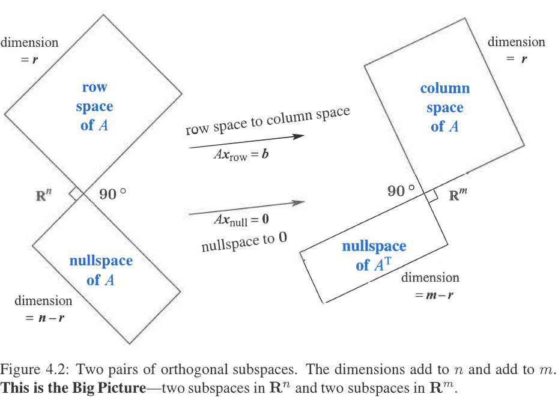
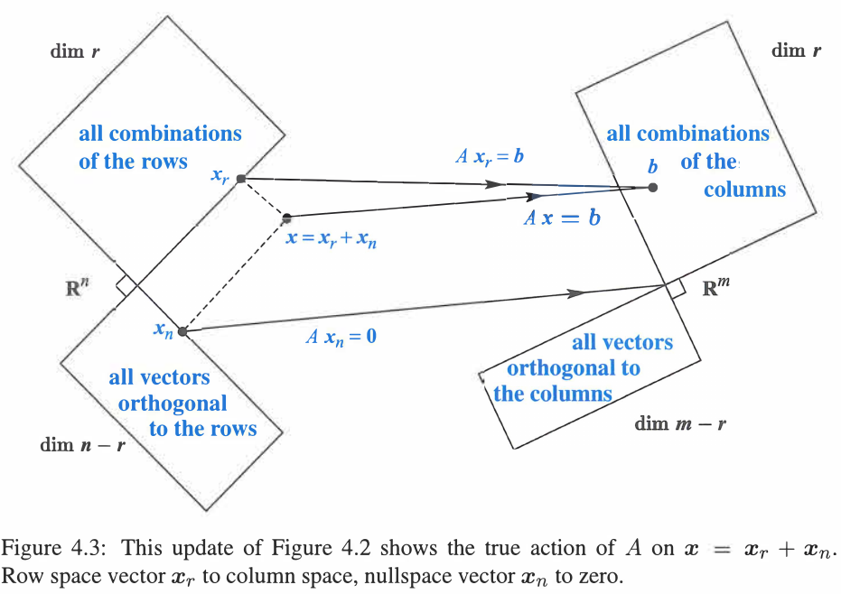
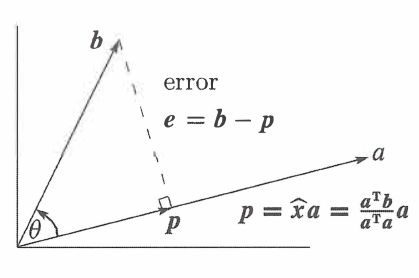
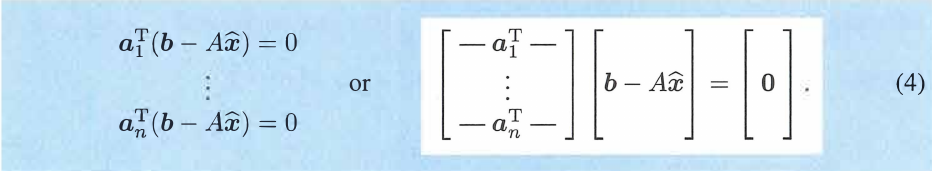
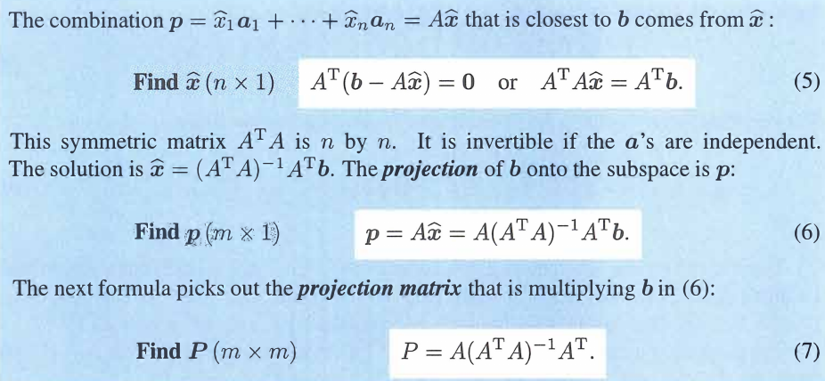

正交
Table of Contents
四个子空间的正交
之前学习了用点乘的方法判断两个向量是否正交（垂直），现在我们要更加伸入的学习正交， 把它扩展到正交子空间、正交基和正交矩阵。两个字空间中的向量、一组基中的向量、矩阵 中的列向量，分别成对互相垂直。
正交子空间的定义：
DEFINITION: Two subspaces V and W of a vector space are orthogonal if every vector v in V is perpendicular to every vector w in W.
vTw=0 for all v in V and all w in W(V,W are two subspaces).
当 \(x\) 属于 \(Ax=b\) 的 \(nullspace\) 时，则有 \(Ax_{n}=0\) 也就是 \(x_{n}\) 与 \(A\) 的每 个行向量都正交，也就是说 \(nullspace\) 和 \(rowspace\) 正交。同理 \(left-nullspace\) 和 \(columnspace\) 正交。
那么思考一个问题，在三维空间中，一条直线可以由一个列向量表示，即秩为1,一个平面可 以由两个向量表示，秩为2,那么与一个平面垂直的可以是直线，也可以是另一个平面，同样， 与一条直线垂直的可以是直线也可以是平面，这样结果就不唯一了，那有没有一种方法能够 确定的描述到底是直线还是平面呢，那就要引入 正交补.
正交补不仅要求两个子空间正交，还多了一个维度的要求，如在三维空间中，一个平面的正 交补是一条线，反之亦然。 即互相正交的两个子空间的维数的和如果等于向量空间的维数 （既正交又互补）， 那么就称一个子空间是另一个子空间的正交补。
Definition:Orthogonal Complement of a subspace V contains every vector that is perpendicular to V.This orthogonal subsapce is denot V⊥(pronounced “V perp”)
Fundamental Theorem of Linear Algebra,Part 2
\(N(A)\) is the orthogonal complement of the row space \(C(A^{T})\) (in \(R^{n}\))
\(N(A^{T})\) is the orthogonal complement of the row space \(C(A)\) (in \(R^{m}\))
解读：Fundamental Theorem Part I给出维度关系，Fundamental Theorem Part II给出垂 直关系，complement时表示一个向量 x in \(R^{n}\) 总能分解到rowspace和nullspace两部分，而且根 据两个subspace之间的dimension关系，可以确定，rowspace和nullspace加起来是完整的Rn 空间。
我们重新审视一下 n 个未知量， m 个方程的 n 元线性方程组 \(A_{m \times n} \time x_{n \times 1}=b_{m \times 1}\) 的意义，列空间的 维数 m,行空间的维数 n,系数矩阵 \(A\) 的秩为 r,以上是以前学到的信息，现在往下看， x 有 n 个元素， b 都有 m 个元素，也就是说 x 在行空间中，而 b 在列空间中，所以这个 方程可以解读为将 \(R^{n}\) 中的一个向量 x 映射到 \(R^{m}\) 中, 同时注意到 \(x\) 由分别 来自行空间和零空间的 \(x_{r}\) 和 \(x_{n}\) 构成，这两个空间是 \(R^{n}\) 的子空间。而 b 来自列空间（ \(R^{m}\) 的子空间）。我们在学习解方程 \(Ax=b\) 时总是分别求出一个 particular solution 和 special solutions,再将它们相加，这两个部分即 \(x_{r}\) 和 \(x_{n}\) 。

矩阵A和向量相乘，可以有很多种解读，但是说到最根本的地方就是，Ax就是为了让x goes to column space，并没有其他什么更高级的功能。

通过上面那张图可以看出，任何一个n维向量可以被分解到rowspace和nullspace，然后通过 A 映射到m维列空间。
这里最重要的是任何一个属于 \(R^{n}\) 的向量都能被分解到row space 和 null space
Projection
本节主要讲向量的映射（投影），先讲映射到直线，重点是映射到子空间。
从上一节可知，矩阵 \(A_{m \times n}\) 可以将 n 维向量 \(x\) 映射到 m 维空间，得到新的 m 维向量 b ，这一节主要研究如果已知空间 \(R^m\) (也就是它n个线性独立的基），怎么得 到 \(A_{m \times n}\).
我们先从最简单的映射到直线开始。
Projection onto a line
目标子空间是一条直线，其维度为1,直线可以用一个列向量表示，我们把它称作 \(a\) ,我们 要投影的向量是 \(b\) ,那么向量 \(p\) 就是我们要求的向量，如下图。

很明显 \(p\) 与 \(a\) 共线，即 \(p=\hat x a\),又因为 \(e \cdot a=0\) 得 \((b-\hat x a) \cdot a=0\) 所以 \(b \cdot a=\hat x a \cdot a\) ,求出了 \(\hat x=\frac{b \cdot a}{a \cdot a}\). 当把 \(a , b\) 看作是只有1列的矩阵的时候，应该写为 \(\hat x=\frac{a^{T}b}{a^{T}a}\),所以 \(p=Pb=a \frac{a^{T}b}{a^{T}{a}}\),所以映射矩阵 \(P=\frac{aa^{T}}{a^{T}a}\),分母是行 向量乘列向量，是一个数字，分子是一个列向量乘行向量，是一个矩阵。
\(I-P\) 也是一个变换矩阵， \((I-P)b=b-p=e\) ,所以在这个变换下，把 \(b\) 投影到了与 \(a\) 正交的子空间上。
When \(P\) projects onto one subspace, \(I-p\) projects onto the orthogonal subspace.
Projection onto a subspace
现在需要再向前迈进一步，把向量映射到一个子空间上，维数大于1.要映射到子空间上，必 须要把这个子空间表示出来，最好的方法就是通过基。如果已知 \(R^{m}\) 的基（列向量） \(a_{1}, \dots a_{n}\) ,待映射的向量 \(b\) ,求映射后的向量，和映射矩阵。
假设映射后的向量 \(p=\hat x_{1}a_{1}+ \dots + \hat x_{n}a_{n}=A \hat x\) ,本问题转 化为求一个合适的向量 \(\hat x\) ,使得 \(b-p\) 与子空间正交，也就是与该子空间的基的点 乘积为0:

上式又可以写为 \(A^{T}(b-A \hat x)=0 \to A^{T}b=A^{T}A \hat x\) ,所以有：

这里面是涉及到了一个求逆过程 \(A^{T}A\) 的逆，存在且仅存在于当B的所有列线性独立
\(B^TB\vec{x}=0\\ B^T(B\vec{x})=0\\ for: \, B^T\neq 0\\ so: \, B\vec{x}=0\)
也就是说 BTB 的Nullspace和 B 的 Nullspace是相同的，如果想可逆，那么nullspace必须 只有0，所以B必须是线性独立的，证毕。
另外P还有些小性质：
- P^2=P
- P^n=P
- distance from \(\vec{a}\) to subspace is \(\vec{e}\)